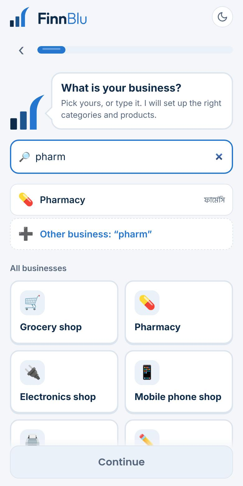
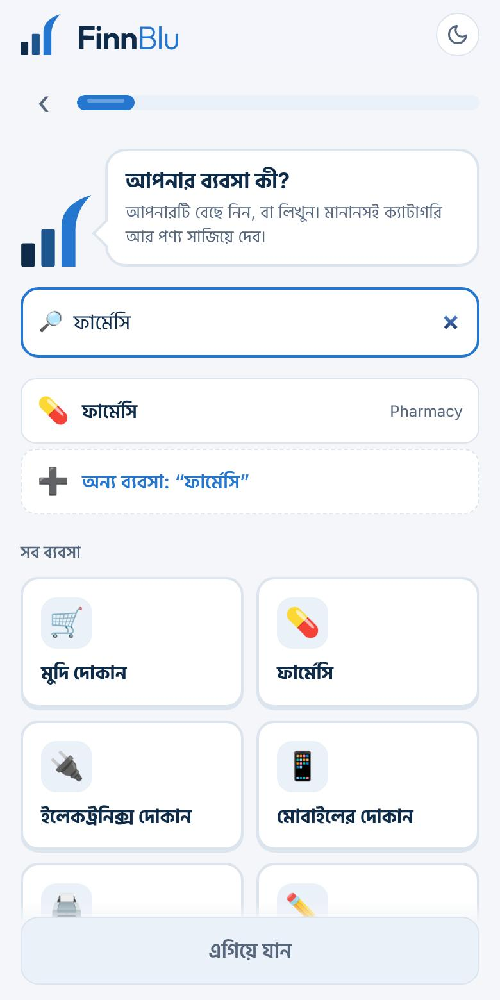
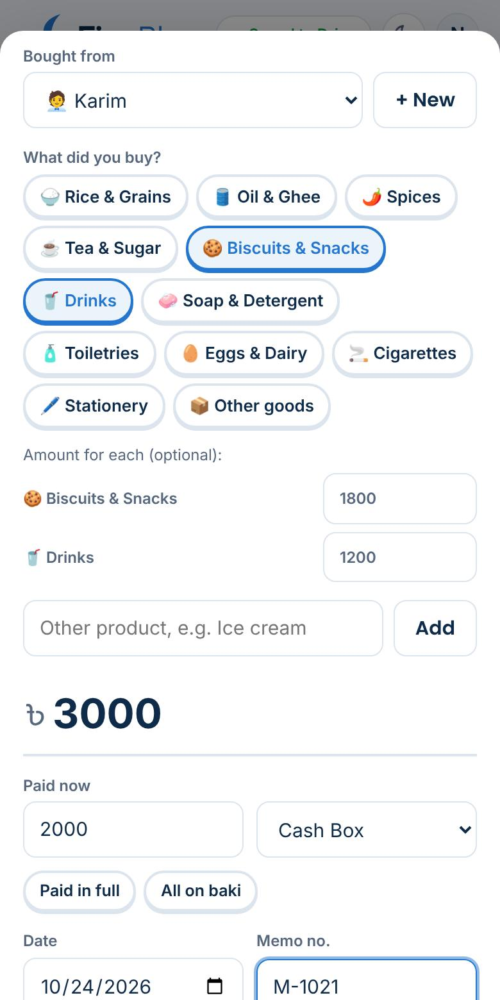
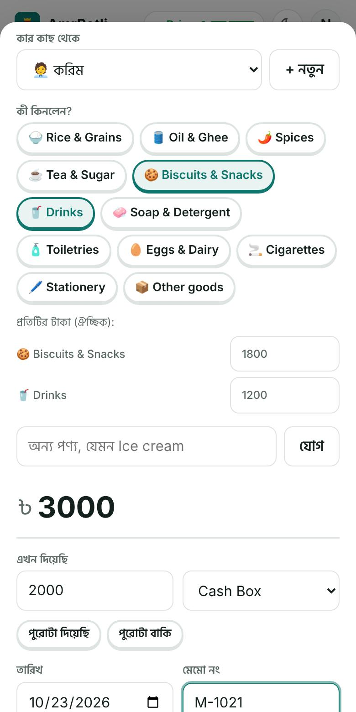
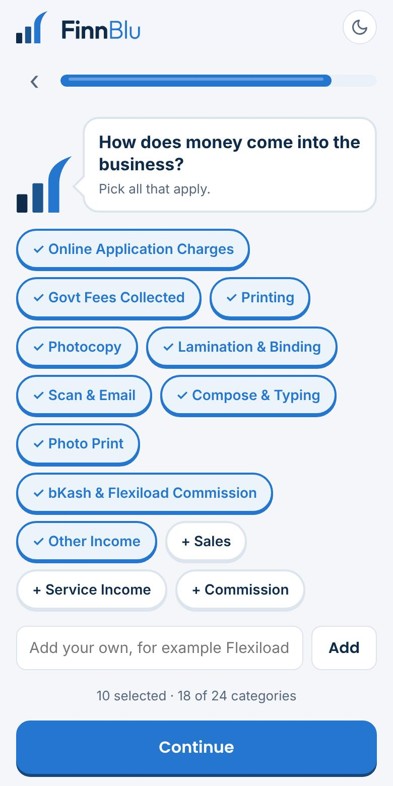
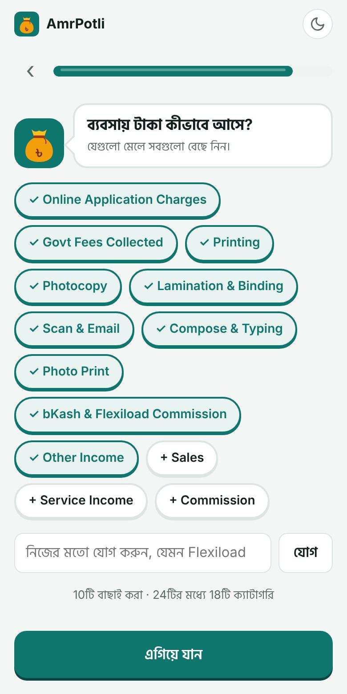

Every business is different. Tell AmrPotli what yours is, and it starts with the right costs, income and products, with the same baki khata, suppliers and purchases as a shop.প্রতিটি ব্যবসা আলাদা। আমার পোটলিকে বলুন আপনার ব্যবসা কী, ঠিক খরচ, আয় আর পণ্যের তালিকা দিয়ে শুরু হবে, সাথে দোকানের মতোই বাকির খাতা, সাপ্লায়ার আর মাল কেনা।
In the first question, type your business in Bangla or English: “ফার্মেসি”, “poultry”, “photocopy”, “মাছের খামার”. Pick it, then choose Business (the business's money) rather than Personal.প্রথম প্রশ্নে বাংলা বা English-এ ব্যবসার নাম লিখুন: “ফার্মেসি”, “poultry”, “photocopy”, “মাছের খামার”। বেছে নিয়ে ব্যক্তিগত নয়, ব্যবসা (ব্যবসার টাকা) বেছে নিন।
Your business gets:আপনার ব্যবসা পাবে:
The daily work (sales, baki, suppliers, purchases) is the same as in the shop guide. Below are the differences for each kind of business.প্রতিদিনের কাজ (বিক্রি, বাকি, সাপ্লায়ার, মাল কেনা) দোকানের গাইডের মতোই। নিচে প্রতিটি ব্যবসার আলাদা দিকগুলো।




For cyber cafés and digital service shops in villages and towns that do online applications, printing, photocopy, lamination, compose and more.গ্রাম আর শহরের সাইবার ক্যাফে ও ডিজিটাল সেবার দোকানের জন্য, যারা অনলাইন আবেদন, প্রিন্ট, ফটোকপি, লেমিনেশন, কম্পোজ আরও অনেক কাজ করেন।


A farm spends for weeks before it sells. AmrPotli helps you see what each batch or season really cost, and whether it paid.খামারে বিক্রির আগে কয়েক সপ্তাহ শুধু খরচ হয়। প্রতিটি ব্যাচ বা মৌসুমে আসলে কত খরচ হলো আর লাভ হলো কি না, আমার পোটলি দেখতে সাহায্য করে।
Write the batch in the note (“Batch 7”), then search it in Transactions to see that batch's costs and sales.নোটে ব্যাচ লিখুন (“ব্যাচ ৭”), পরে লেনদেনে খুঁজলে সেই ব্যাচের খরচ আর বিক্রি দেখাবে।
Pond lease is a yearly or seasonal payment: set it to repeat or add it with a note of the season.পুকুর লিজ বছরে বা মৌসুমে একবার: পুনরাবৃত্তি দিন, বা মৌসুমের নোট দিয়ে লিখুন।
Milk buyers who pay weekly or monthly go in the baki khata; tap Got payment when they pay.যারা সপ্তাহে বা মাসে দুধের দাম দেন তাদের বাকির খাতায় রাখুন; দিলে “টাকা পেলাম” চাপুন।
Don't see yours? Choose Other business, and add your own categories (up to 24 in total).আপনারটা নেই? “অন্য ব্যবসা” বেছে নিজের ক্যাটাগরি যোগ করুন (মোট ২৪টি পর্যন্ত)।
| Businessব্যবসা | Purchases go toমাল কেনা যায় | Main incomeপ্রধান আয় |
|---|---|---|
| 🛒 Grocery shopমুদি দোকান | Stock Purchase | Sales |
| 💊 Pharmacyফার্মেসি | Medicine Purchase | Medicine Sales |
| 🖨️ Computer & photocopyকম্পিউটার ও ফটোকপি | Paper & Supplies | Online Application Charges, Printing, Photocopy… |
| 🔌 Electronics shopইলেকট্রনিক্স | Stock Purchase | Sales, Repair Service |
| 📱 Mobile phone shopমোবাইলের দোকান | Stock Purchase | Phone Sales, Accessories, Flexiload Commission |
| ✏️ Stationery & libraryস্টেশনারি ও লাইব্রেরি | Stock Purchase | Sales, Photocopy & Printing |
| 👗 Clothing shopকাপড়ের দোকান | Stock Purchase | Sales |
| ✂️ Tailorদর্জি | Fabric & Thread | Tailoring Charges |
| 🍛 Restaurant / tea stallহোটেল / চায়ের দোকান | Bazar & Ingredients | Food Sales |
| 🔩 Hardware & building materialsহার্ডওয়্যার ও নির্মাণসামগ্রী | Stock Purchase | Sales |
| 💇 Salon / parlourসেলুন / পার্লার | Products & Supplies | Service Charges |
| 🛍️ Online shopঅনলাইন ব্যবসা | Product Purchase | Online Sales |
| 📲 bKash / Flexiload agentবিকাশ / ফ্লেক্সিলোড এজেন্ট | Stock Purchase | bKash, Nagad, Flexiload Commission |
| 🌾 Crop farmingকৃষি | Farm Inputs | Crop Sales |
| 🐔 Poultry farmমুরগির খামার | Farm Inputs | Chicken, Egg, Manure Sales |
| 🐟 Fish farmমাছের খামার | Farm Inputs | Fish Sales |
| 🐄 Dairy & cattleগরুর খামার | Farm Inputs | Milk Sales, Cattle Sales |